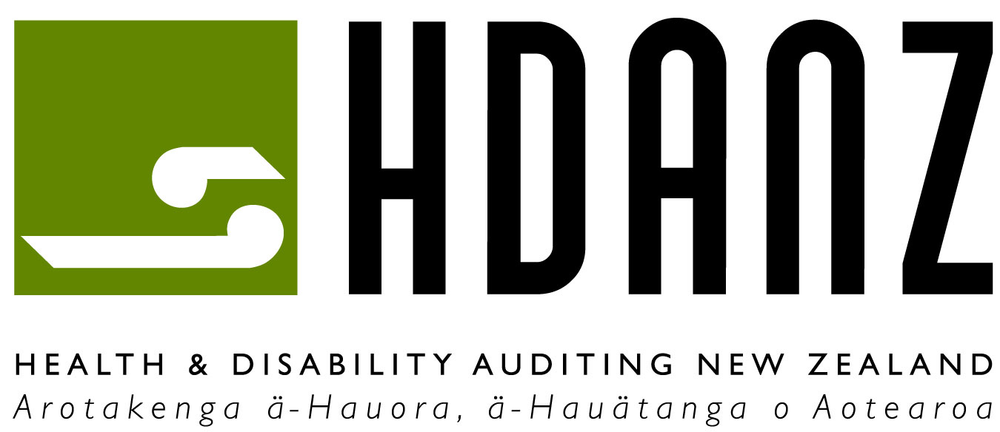
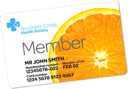
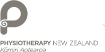
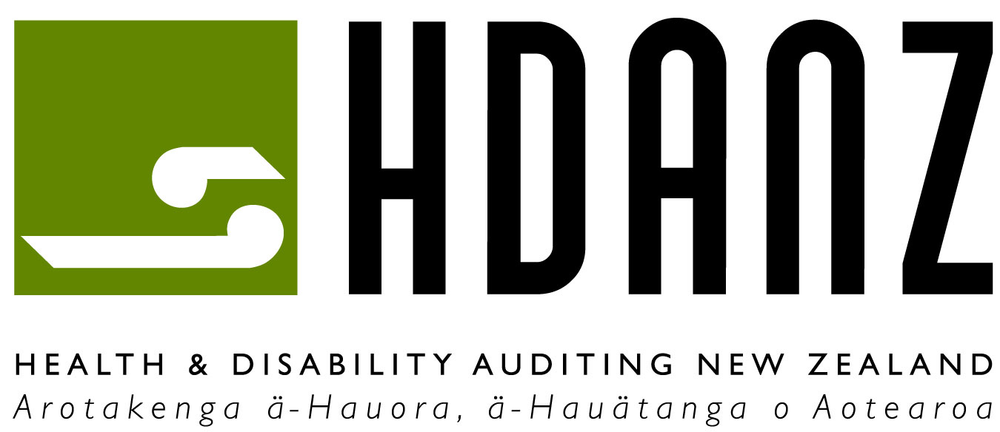
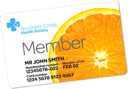
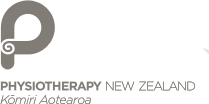
 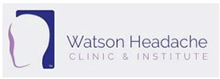
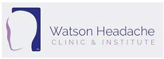

To act with personal and professional integrity in accordance with standards set by the Physiotherapy Board of New Zealand, while providing a compassionate, humanistic and holistic physiotherapy service, to all who walk through our doors.
To employ an evidence-informed, bio-psycho-social approach that is tailored to each individual’s goals and needs, and is responsive to changes in the patient and their condition, as well as to current physiotherapy research and best clinical practice.
To educate and empower patients throughout their rehabilitation journey, facilitating the return of their confidence, independence and function, helping them achieve their goals, and therefore the best possible outcomes for each individual".
If you are passionate about providing the best healthcare to your patients, being part of a strong and cohesive team and continuing to grow professionally then we want to hear from you.
Email your CV through to us at tearophysio@xtra.co.nz and we will get in touch. Feel free to also contact us with any questions that you may have.
We are keen to get involved with local sports team by providing services in injury prevention, recovery and safe participation.
We have many experienced and qualified Physios who are also active sports players and have a strong understanding of high level performance involved in different sports. We also offer well trained and experienced massage therapist who can assist with different needs of the body of a high performing athlete.
If you are a local sports team and currently seeking a Physiotherapy clinic to be a part of your team then get in contact with us in relation to our sponsorship deal.
WE OFFER DISCOUNTED PHYSIOTHERAPY APPOINTMENTS FOR SPONSORED TEAM MEMBERS.
Contact tearophysio@xtra.co.nz to enquire for more information
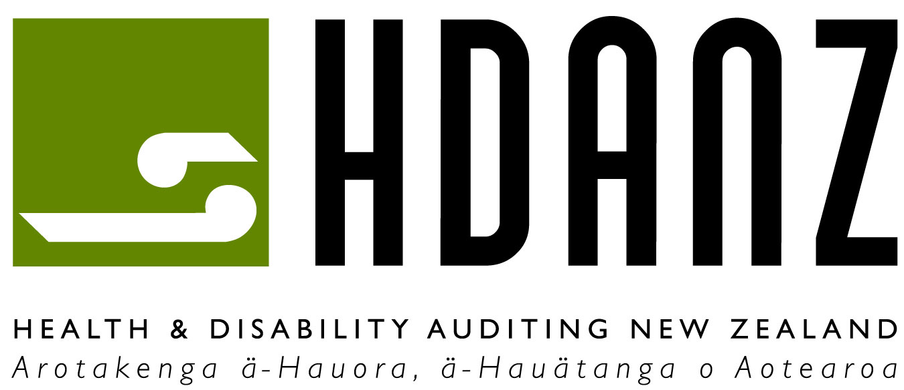
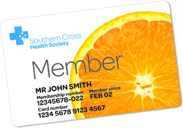
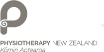
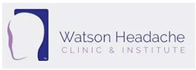
ACC
Information on how to make a claim, whether you are covered, and what support is available to you. You will also find some useful tips on injury prevention.
Pinc and steel NZ
Information about how to register for Cancer Rehabilitation Physiotherapy sessions, available support and what to expect during the sessions with a physiotherapist. Ask the team for further information.
Watson headache & migranes
A great website that provides information on headaches and migraines. This website provides information regarding the symptoms and how to address the discomfort and/or pain. Ask the team for further information.
McKenzie institue
The umbrella organization for all McKenzie and MDT therapists worldwide. Read the latest research in the fields of back and neck pain as well as extremity problems. You can also find a trained McKenzie therapist near you, whether that is in New Zealand or overseas.
NZ physiotherapy society
The latest updates on what is happening within the profession and the ongoing discussion with ACC.
Google scholar
A great website if you are interested in research and want to find a particular article or want to know more on a particular topic. Type in the author of a paper or keywords of the area you are interested in (i.e. back pain) and you will find the latest research papers published on the topic.
Habit at work
Put together by ACC in consultation with leading specialists in the field of occupational health. Contains resources and information including how to set up your work place, whether that is in a down-town office or on the factory floor.